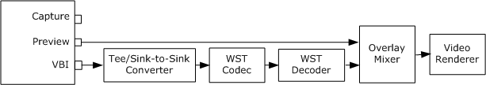

[The feature associated with this page, DirectShow, is a legacy feature. It has been superseded by MediaPlayer, IMFMediaEngine, and Audio/Video Capture in Media Foundation. Those features have been optimized for Windows 10 and Windows 11. Microsoft strongly recommends that new code use MediaPlayer, IMFMediaEngine and Audio/Video Capture in Media Foundation instead of DirectShow, when possible. Microsoft suggests that existing code that uses the legacy APIs be rewritten to use the new APIs if possible.]
[!Note]
This functionality has been removed from Windows Vista and later operating systems. It is available for use in the Microsoft Windows 2000, Windows XP, and Windows Server 2003 operating systems.
Â
World Standard Teletext (WST) is encoded in the vertical blanking interval (VBI) of the analog television signal. The filter graph for previewing teletext is similar to the graph used to view closed captions. The following diagram illustrates this graph.

This graph uses the following filters for WST display:
The Capture Graph Builder's RenderStream method does not support the WST filters directly, so your application must do some extra work.
Add the Overlay Mixer filter to the filter graph. The following code uses the AddFilterByCLSID function described in Add a Filter by CLSID. (AddFilterByCLSID is not a DirectShow API.)
IBaseFilter *pOvMix = NULL; // Pointer to the Overlay Mixer filter.
hr = AddFilterByCLSID(pGraph, CLSID_OverlayMixer, L"OVMix", &pOvMix);
if (FAILED(hr))
{
// Handle the error ...
}
Connect the preview pin to the Video Renderer filter through the Overlay Mixer. You can use the RenderStream method, as follows:
hr = pBuild->RenderStream(&PIN_CATEGORY_PREVIEW, &MEDIATYPE_Video,
pCap, pOvMix, 0);
Add the Tee/Sink-to-Sink Converter filter to the filter graph. The following code uses the CreateKernelFilter function described in Creating Kernel-Mode Filters. (CreateKernelFilter is not a DirectShow API.)
IBaseFilter* pKernelTee = NULL;
hr = CreateKernelFilter(AM_KSCATEGORY_SPLITTER,
OLESTR("Tee/Sink-to-Sink Converter"), &pKernelTee);
if (SUCCEEDED(hr))
{
hr = pGraph->AddFilter(pKernelTee, L"Kernel Tee");
}
Add the WST Codec filter to the filter graph:
IBaseFilter* pWstCodec = NULL;
hr = CreateKernelFilter(AM_KSCATEGORY_VBICODEC,
OLESTR("WST Codec"), &pWstCodec);
if (SUCCEEDED(hr))
{
hr = pGraph->AddFilter(pWstCodec, L"WST Codec");
}
Call RenderStream to connect the capture filter's VBI pin to the Tee/Sink-to-Sink Converter, and the Tee/Sink-to-Sink Converter to the WST Codec filter:
hr = pBuild->RenderStream(&PIN_CATEGORY_VBI, 0, pCap,
pKernelTee, pWstCodec);
Call RenderStream again to connect the WST Codec filter to the Overlay Mixer. The WST Decoder filter is automatically brought into the graph.
hr = pBuild->RenderStream(0, 0, pWstCodec, 0, pOvMix);
Remember to release all of the filter interfaces.
pOvMix->Release();
pKernelTee->Release();
pWstCodec->Release();
[!Note]
Currently, the WST Decoder filter does not support connections to the Video Mixing Renderer (VMR) filter. Therefore, you must use the legacy Video Renderer filter to view teletext.
Â
If the capture filter has a video port VBI pin (PIN_CATEGPORY_VIDEOPORT_VBI), connect it to the VBI Surface Allocator filter. The graph will not run correctly otherwise. The following code example uses the AddFilterByCLSID function, described in Add a Filter by CLSID, and the FindPinByCategory function, described in Working with Pin Categories. (Neither function is a DirectShow API.)
// Look for a video port VBI pin on the capture filter.
IPin *pVPVBI = NULL;
hr = FindPinByCategory(pCap, PINDIR_OUTPUT,
PIN_CATEGORY_VIDEOPORT_VBI, &pVPVBI);
if (FAILED(hr))
{
// No video port VBI pin; nothing else to do. OK to run the graph.
}
else
{
// Found one. Connect it to the VBI Surface Allocator.
IBaseFilter *pSurf = NULL;
hr = AddFilterByCLSID(pGraph, CLSID_VBISurfaces, L"VBI Surf", &pSurf);
if (SUCCEEDED(hr))
{
hr = pBuild->RenderStream(NULL, NULL, pVPVBI, 0, pSurf);
pSurf->Release();
}
if (FAILED(hr))
{
// Handle the error (not shown). It is probably not safe to
// run the graph at this point.
}
pVPVBI->Release();
}
Â
Â